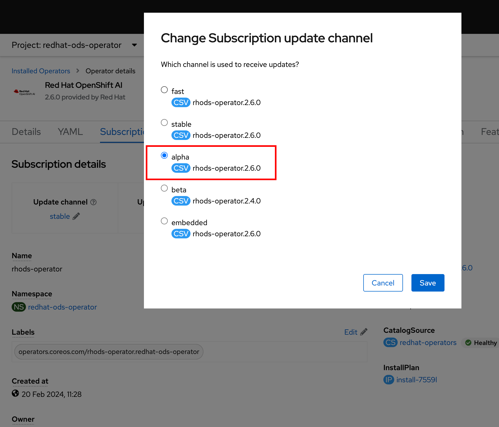
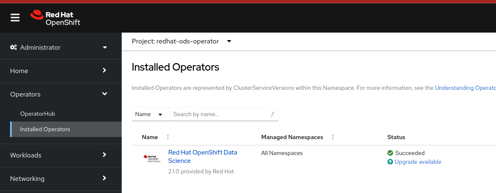
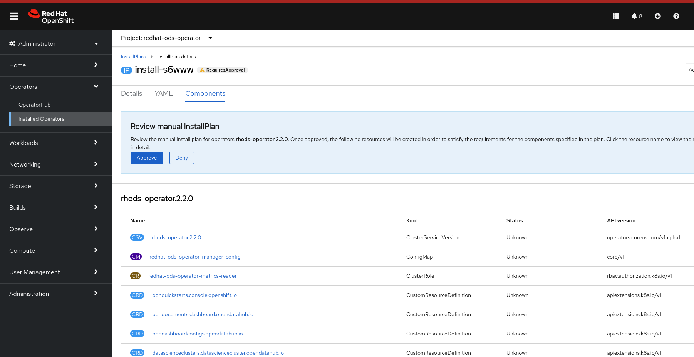

Upgrading Red Hat Openshift Data Science
Upgrades of Red Hat Openshift Data Science is handled by the operator.
| Upgrading directly from the Red Hat OpenShift Data Science self-managed Beta version to the Generally Available (GA) release is not supported. The operator has to be uninstalled first and replaced with the new version. |
When an upgrade is available OLM creates an Installplan for the new version.
$ oc get installplan -n redhat-ods-operator NAME CSV APPROVAL APPROVED install-sp49w rhods-operator.2.2.0 Manual false (1) install-w6lqv rhods-operator.2.1.0 Manual true (2)
| 1 | Installplan for the new version of the operator which has not been approved yet. It has to be approved in order to start the upgrade. |
| 2 | Installplan for the currently installed version. It’s been approved and the version is currently installed. |
Installplan is approved either automatically when a new version is available without user’s intervention or requires a manual approval. Whether the approval is automatic or manual depends on the value of the installPlanApproval attribute of the operator’s subscription. When it is set to Automatic the installplan is approved automaticaly and installation starts without user’s intervention. Manual value requires a manual approval.
Approvals can be set from the web console as well as from the CLI.
Manual approvals done from the CLI are discussed in the Approving Installation Manualy section and are exactly the same as for the installation.
The following demonstration shows an upgrade with a manual approval done from the web console.
Demo: Upgrading Red Hat Openshift Data Science
| Make sure that you have installed the Red Hat Openshift Data Science operator using one of the previous demonstrations (Web based or CLI). They both install an older version of the operator from the embedded channel. |
-
Log in to Red Hat Openshift web console using a user which has cluster-admin role assigned.
-
Navigate to Operators → Installed Operators, select project redhat-ods-operator, click on the Red Hat OpenShift Data Science and choose the Subscription tab. Edit the Update channel - change it to alpha and click on Save.
 -
Navigate again to Operators → Installed Operators and select project redhat-ods-operator. You should see Upgrade available under the Status column.
 -
Click on the Upgrade available status link to open operator’s Install plan

-
Click on the Preview InstallPlan button to review changes to be made by the upgrade.
 -
Click on the Approve button to approve and start the upgrade and navigate to Operators → Installed Operators to view the upgrade status.

-
Wait until the Status changes to Succeeded

Backup considerations
Permanent storage for Jupyter notebooks is done using OpenShift Persistent Volume Claims (PVC) attached to the Jupyter notebook pod. The operator does not manage PVCs hence there is no need to take a backup as long as the Openshift Namespace where the Jupyter notebook pod is running is not deleted. Even in an event of accidental operator uninstallation all PVCs in namespaces created by either the operator or a Red Hat Openshift Data Science user remain untouched.